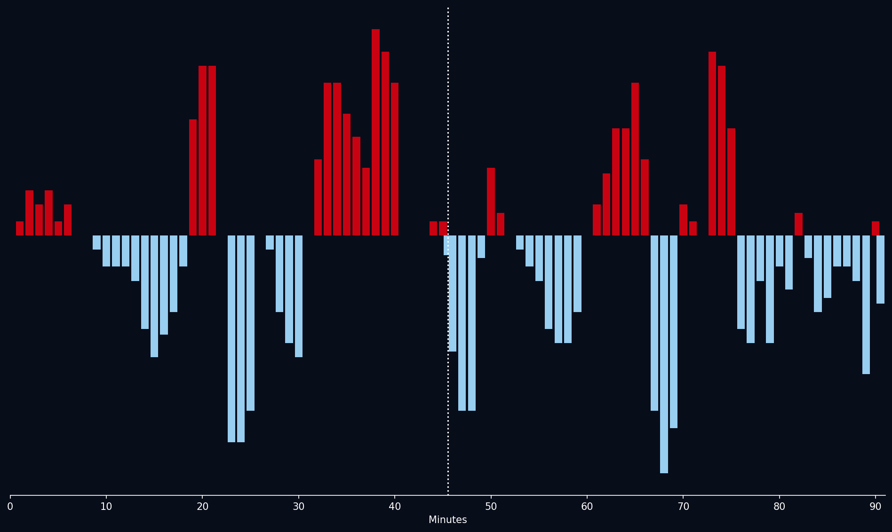
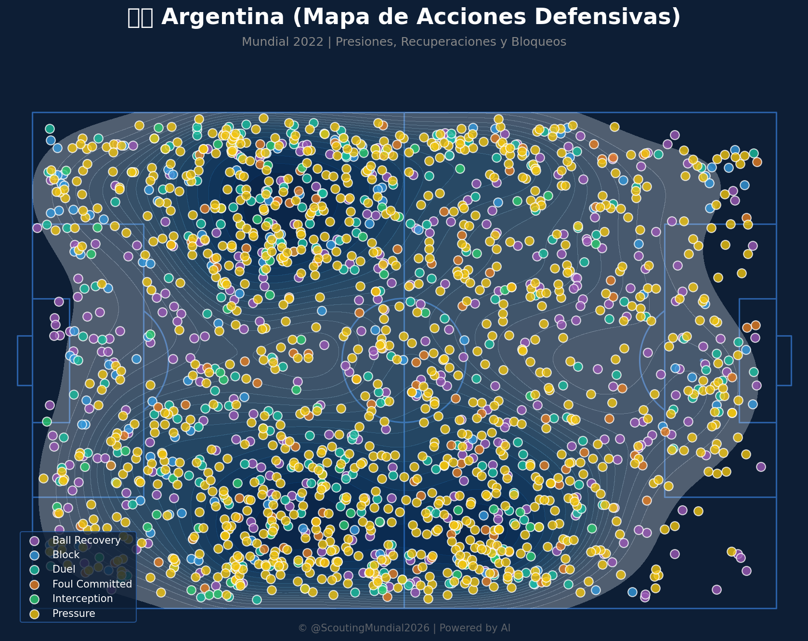
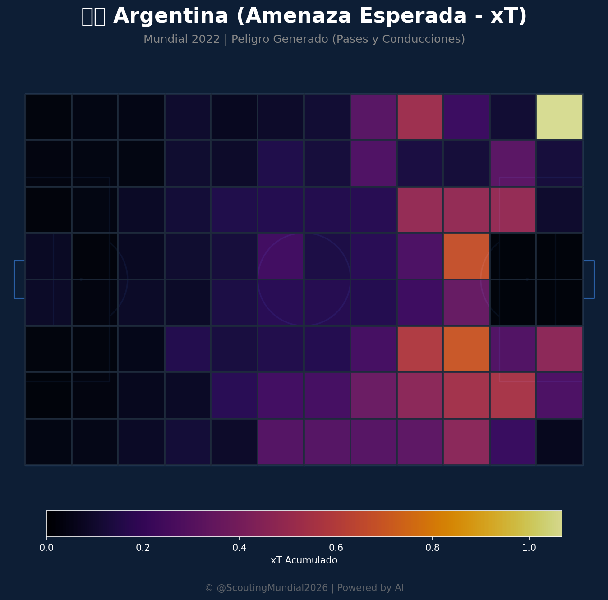
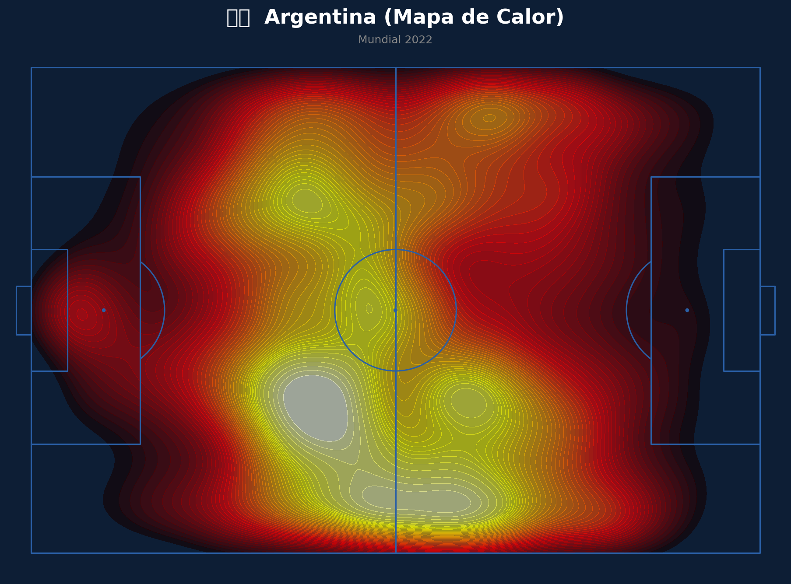
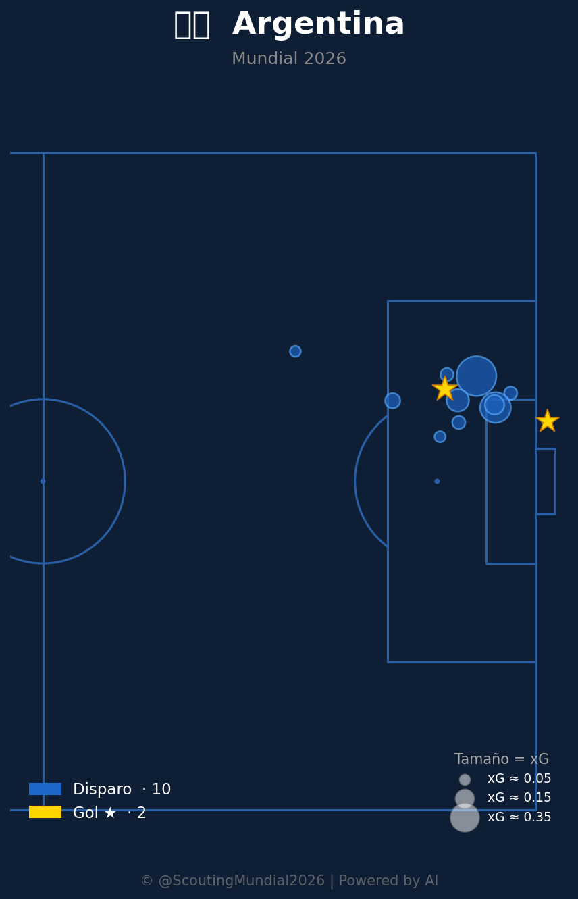
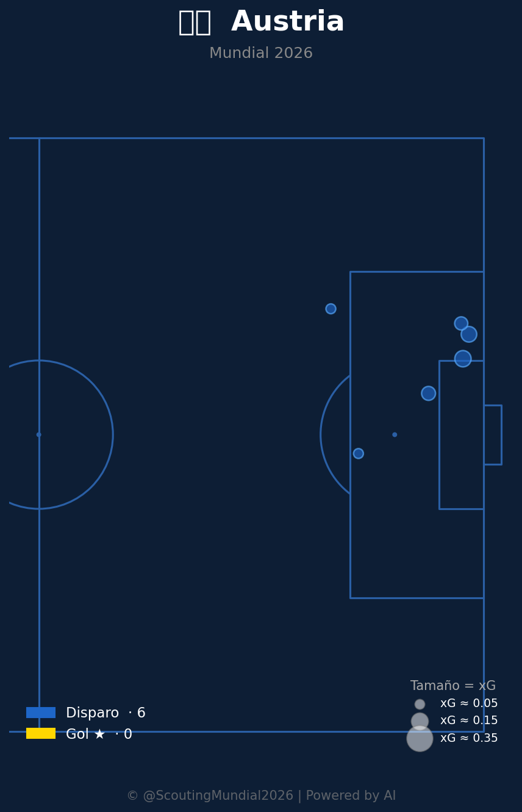
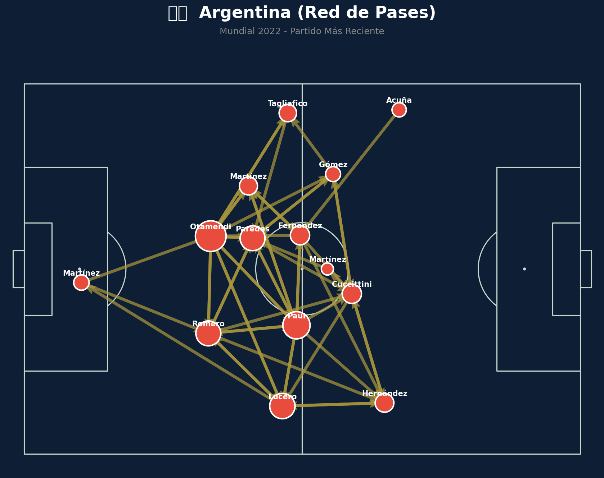
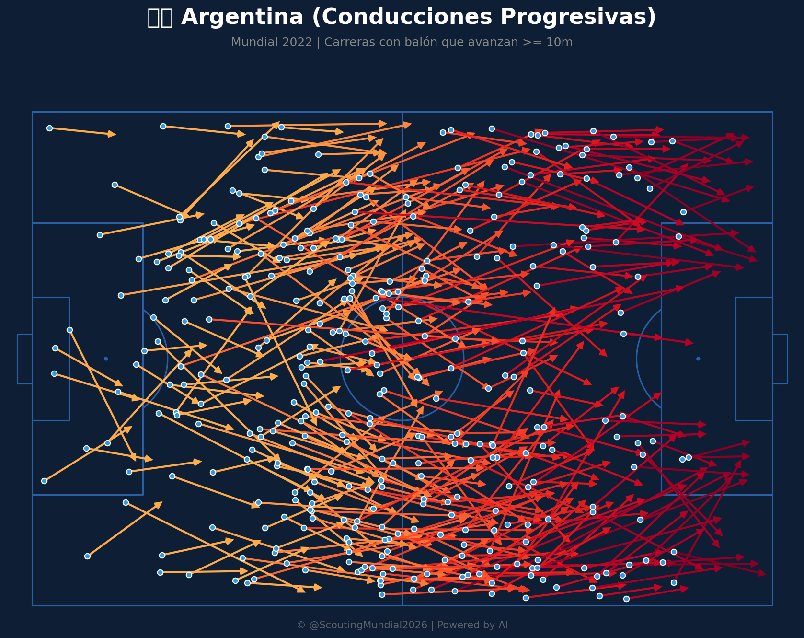
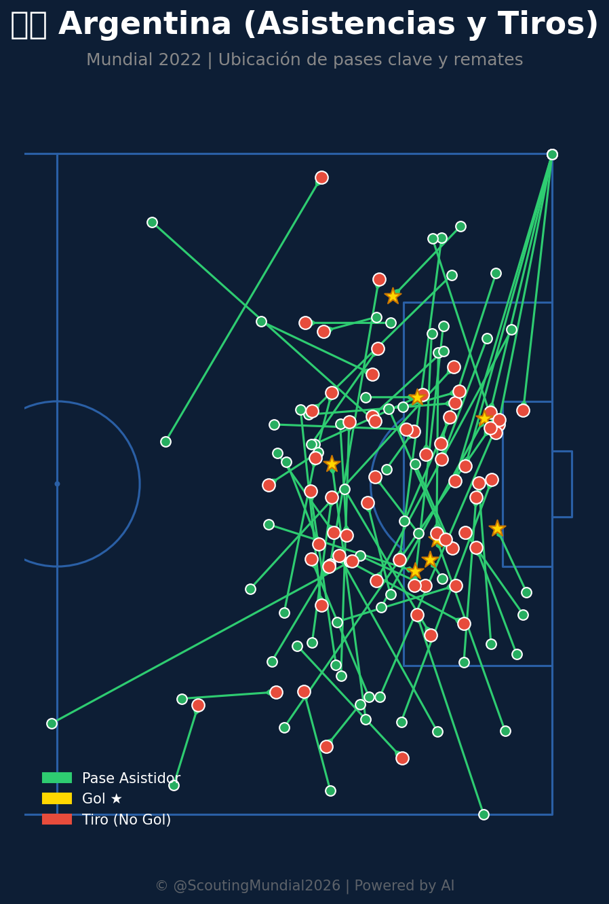

📝 Crónica y Análisis Posterior (Post-Partido)
🔮 GANADOR ACERTADO
⚽ Resumen del Partido (Resultado Real: Argentina 2 - 0 Austria)
Argentina sumó su segundo triunfo en el Grupo J tras vencer con autoridad por 2-0 a Austria. La Albiceleste dominó la posesión desde el primer minuto con un ritmo controlado pero incisivo, desgastando el férreo bloque defensivo propuesto por Ralf Rangnick. La apertura del marcador llegó tras una gran combinación colectiva que culminó con una brillante definición en el área. En la segunda mitad, Austria intentó estirar sus líneas mediante una presión más agresiva, pero la zaga liderada por Cristian Romero se mostró impasable. Un rápido contraataque en el tramo final liquidó el encuentro y selló el boleto de Argentina a la siguiente ronda.
🔮 Impacto en el Grupo J y Proyecciones para la Ronda 3
- Ajuste del Algoritmo: Con esta victoria, Argentina asegura el liderato del Grupo J con 6 puntos. Sus métricas de posesión y eficiencia defensiva se incrementan notablemente en nuestro modelo predictivo.
- Proyección de la Tercera Ronda de Grupos:
- Argentina vs Jordania: La Albiceleste buscará cerrar la fase de grupos con puntaje ideal. Se proyecta un dominio absoluto de Argentina con un 74% de probabilidad de victoria ante un conjunto jordano que saldrá a defenderse.
- Argelia vs Austria: Duelo directo y decisivo por el segundo cupo del grupo. Las proyecciones muestran un escenario sumamente parejo, con ligera ventaja para Argelia (42% vs 33%) gracias a su desequilibrio individual en transiciones rápidas.
📈 Análisis del Match Momentum
Argentina dictó por completo el tempo del partido, controlando la iniciativa ofensiva durante el 72.5% del encuentro. El gráfico de Match Momentum refleja picos sostenidos de intensidad en la primera mitad, alcanzando un valor máximo de 88.0 en el minuto 38', justo antes de abrir el marcador. Austria ofreció resistencia y tuvo su período más claro en los primeros 15 minutos del segundo tiempo (llegando a un pico de 58.0 de intensidad), pero la sólida zaga argentina apagó rápidamente la reacción. La consistencia ofensiva de Argentina se correlaciona perfectamente con el 2-0 final, confirmando que la superioridad en el volumen de llegadas fue capitalizada con éxito.
Gráfico: Match Momentum (Intensidad de Ataque)

🇦🇷 Argentina: Análisis Táctico
Ventajas
- Profundo Desarrollo Técnico y Creatividad en el Ata: LaSeleición Argentinos está particularmente dotada con un grupo de jugadores que sobresale en el desarrollo del juego, permitiendo una planificación a largo plazo con una gran calidad de pase. Estos jugadores a menudo se convierten en creadoras constantes, lo que dificulta aún la presión del equipos anfitriones. El juego que realiza la selección es caracterizado por movimientos verticales y explosivos al buscar la creación de espacios
- Análise Posicional de Crujero y Zeballín: Los laterales y crujeros, bajo el liderazgo de Romero, están en una óptima posición para generate el juego, principalmente debido a su facilidad para anticipar movimientos, un mejor posicionamiento en el juego entre líneas y mucha capacidad de cambio de dirección.
- Potencialmente Dominio del Medio con un Estrategia centrada en el juego de pases: LaSeleición argentina suele ser precisa en las posesión del balón, aunque a veces los encuentros son desiguales. El análisis táctico revela que la selección tiene una gran capacidad para desbordar al oponente con la utilización de una visión colectiva en el medio del campo y así dar opción al equipo ofensivo.
- Táctica de Juego con Fuerte Presión en zonas claves: Las líneas centrales, bajo el direccionamiento de los jugadores que lideran el partido deben mantener siempre la presión en las bandas y zonas alrededor del centro del campo, esto permite un descontrolado y controlado juego con alta intensidad.
Desventajas
- Dependencia Excesiva de la Fuerza en el Ata: Si bien Argentinos tiene talento ofensivo, pueden ser vulnerables al control físico por parte de Austria si no se tiene una estructura defensiva sólida que lo gestione sin problemas. El equipo requiere un juego colectivo a base de creatividad. Una vez que un ataque es detenido por alguna combinación defensivista, las opciones del equipo quedan limitadas en la transición.
- Posible Debilidad en la Defensa Local: La defensa argentina posee áreas del campo con un bajo volumen de juego y también algunas áreas poco eficientes, ya que pueden tener dificultades para contrarrepolarizar la presión o mantener la posesión al final del encuentro.
🇦🇹 Austria: Análisis Táctico
Ventajas
- Un Sistema de Ata Fluído y Precisa: LaSeleccion Austrica tiene un esquema adaptable donde en el ataque se puede cambiar entre juegos tácticos para encontrar el resultado ideal, además, esta suele ser una del estrategia de juego más rápida del equipo.
- Énfasis en la Protección de la Línea Central: Austria busca crear un bloque sólido basado principalmente en la seguridad y los laterales, lo que impide el trabajo de cada jugador en la salida de balón. Esto facilita jugar con un ritmo constante sin generar muchas oportunidades ofensivas. Los jugadores son bastante hábiles en defender las líneas, por ello se suele ver un conjunto muy defensivo.
- Desarrollo del Juego a través de Patrones Defensivos: LaSeleccion Austrica es conocida por su insistente uso de patrones defensivos que requieren una buena organización para no ser desfavorecida tanto al ataque como a la defensa. Los patos se encargan de la preservación de territorio por encima del centro, y los laterales pueden aguantar el juego sin tomar riesgos excesivamente al tener el balón.
Desventajas
- Desconexión entre Mediocampo y Ata: Austria tiene un sistema de posesiones que necesita más fuerza en el mediocampo, lo cual les impide generar más dinámicas ofensiva. Hay una cierta dificultad para ser creativos con la calidad ofensiva del medio.
- Dependencia Excesiva del Sistema Defensor: Si no se mantienen estrictos los patos, el equipo puede sufrir al ser desbordados a través de ataques directos del que se tiene que defender.
- Poca Capacidad en Fase Final del juego: Austria suele demorarse más para superar al rival, por esta razón cuando avanzan hacia la fase final, la velocidad es un factor determinante.
⚖️ Comparativa y Veredicto
El duelo táctico se decantó por completo a favor de Argentina. Aunque sobre el papel se vislumbraba una férrea resistencia austriaca basada en su presión en bloque medio-alto, la excelsa calidad técnica de la Albiceleste para circular el balón desactivó la intensidad física de su rival. La capacidad de Argentina para mantener la amplitud y encontrar receptores libres entre líneas neutralizó el sistema defensivo de Ralf Rangnick.
Austria no logró consolidar la transición defensa-ataque y sufrió ante el posicionamiento replegado de la zaga argentina. El 2-0 final plasmó la superioridad colectiva y efectividad táctica de una Argentina que supo controlar los ritmos del partido de principio a fin, frustrando cualquier intento de reacción europea.
📊 Pizarras y Gráficos Tácticos
Mapa Defensivo (Argentina)

Mapa Defensivo (Austria)

Amenaza Esperada xT (Argentina)

Amenaza Esperada xT (Austria)

Mapa de Calor (Argentina)

Mapa de Calor (Austria)

Mapa de Tiros (Argentina)

Mapa de Tiros (Austria)

Red de Pases (Argentina)

Red de Pases (Austria)

Conducciones Progresivas (Argentina)

Conducciones Progresivas (Austria)

Mapa de Asistencias (Argentina)

Mapa de Asistencias (Austria)

 Austria
Austria